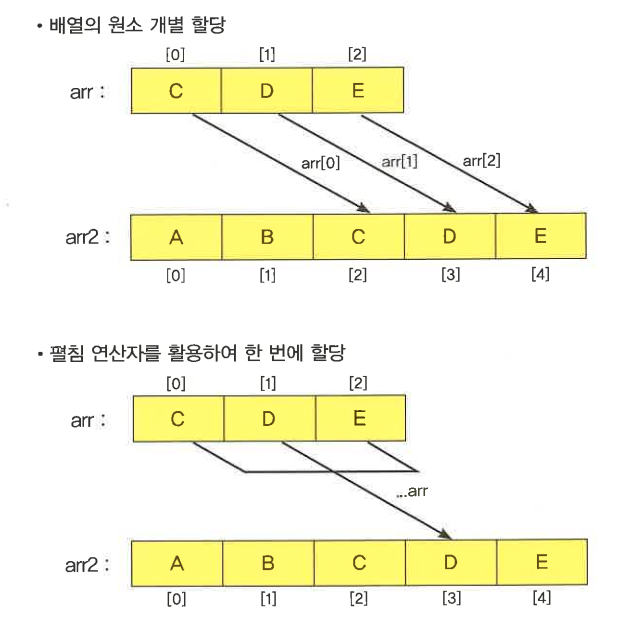
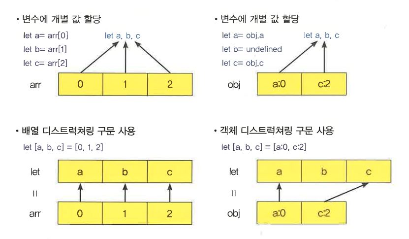

- 펼침 연산자(Spread Operator)는 배열의 원소 또는 객체의 속성 등을 펼쳐 할당해 준다. 펼침 연산자는 (...)으로 표기하며, 주로 배열 원소 전부를 한 번에 다른 리터럴 배열 원소에 포함시키거나, 객체 속성 전부를 한 번에 다른 리터럴 객체 속성에 포함시킬 수 있다. 펼침 연산자는 함수 인수에 활용하여 한꺼번에 인자를 전달받을 수 있어 편리함을 제공한다.

- 이전에는 배열 원소를 하나씩 읽어 개별적으로 리터럴 배열에 포함시켜 주어야 했다. 하지만 이 방법은 매우 번거롭다. 다음 코드의 예를 살펴보면
let arr = [1,2,3]; // arr 배열 원소를 index별로 읽어 배열 리터럴 원소로 추가 let arr2 = [0,arr[0],arr[1],arr[2],4]; console.log(arr2); // 결과는 [0,1,2,3,4]
- 위와 같은 경우 펼침 연산자를 사용하면 한꺼번에 리터럴 배열에 원소를 추가시킬 수 있다. 다음 코드를 보면 위의 코드보다 작성도 편하고 가독성이 좋아졌다.
let arr = [1,2,3]; let arr2 = [0,...arr,4]; // (펼침 연산자)로 arr 배열 원소를 한번에 펼쳐 리터럴 배열에 추가 console.log(arr2); // 결과는 [0,1,2,3,4]
- 이전에는 함수 호출 시 인자로 배열 원소 전부를 전달하는 경우, 하나씩 읽어 할달해 주어야 했다. 하지만 이 방법 역시 매우 번거롭다. 아음 코드의 예를 살펴보자
let arr = [1,2,3];
function foo(p1, p2, p3){
console.log(p1, p2, p3); // 결과는 1, 2, 3
}
foo(arr[0], arr[1], arr[2]); // 배열 원소를 index별로 읽어 함수 인수에 전달
- 위와 같은 경우 펼침 연산자를 사용하면 한꺼번에 함수 인수에 배열 원소를 각각 전달할 수 있다. 아래 그 코드를 보면 위의 코드보다 작성하기도 편리하고 가독성이 좋아졌다.
let arr = [1,2,3];
function foo(p1, p2, p3){
console.log(p1, p2, p3); // 결과는 1, 2, 3
}
foo(...arr); // ...(펼침 연산자)로 arr 배열 원소를 한번에 펼쳐 foo 함수 인수에 전달
- 이전에는 객체 속성을 하나씩 읽어 개별적으로 리터럴 객체에 포함시켜 주어야 했다. 이 방법은 매우 번거롭다. 다음 코드의 예를 살펴보면
let obj = {p1:1, p2:2};
let obj2 = {p2:20, p3:30}; // obj 객체 속성을 index별로 읽어 배열 리터럴 원소로 추가
obj2.p1 = obj.p1;
obj2.p2 = obj.p2;
console.log(obj2); // 결과는 {p1:1, p2:2, p3:30}
- 펼침 연산자를 사용하면 위의 경우 객체 속성을 개별적으로 읽어 추가하지 않고 한꺼번에 추가가 가능하다. 속성을 추가하려는 리터럴 객체에 이미 존재하는 속성은 값만 할당하며, 없는 속성은 추가하여 값을 할당한다. 다음 코드를 보면 위의 코드보다 작성도 편하고 가독성도 좋아졌다. (책은 결과 값이 오타임)
let obj = {p1:1, p2:2};
// ...(펼침 연산자)로 obj 객체 속성을 한 번에 펼쳐 리터럴 객체에 추가
let obj2 = {p2:20, p3:30, ...obj};
// p2 속성의 값이 펼침 연산자에 의해 덮어 씌워지고, p1 속성이 추가됨
console.log(obj2); // 결과는 {p1:1, p2:2, p3:30}
- 이전에는 함수 호출 시 인자로 객체 속성 전부를 전달하는 경우 하나씩 읽어 할당해 주어야 했다. 하지만 이 방법은 매우 번거롭다. 다음 코드 예를 살펴보면 (책은 오류가 있음 : 강의에제 수정함)
let obj = {p1:1, p2:2};
function foo(p1, p2){
console.log(p1, p2);
};
foo(1,2); // 결과는 1, 2
- 위와 같은 경우 펼침 연산자를 사용하면 한꺼번에 함수 인수에 객체 속성값을 각각 전달 할 수 있다. 다음 코드를 보면 위의 코드보다 작성도 편하고 가독성이 좋아졌다. (책은 오류가 있음 : 강의에제 수정함)
let obj = {p1:1, p2:2};
function foo(p1, p2){
console.log(p1, p2);
}
foo({...obj});
- 이번 장에서는 펼침 연산자에 대해서 알아보았다. 다음은 펼침 연산자를 사용했을 때와 않았을 때의 차이점을 정리한 표이다.
| 배열의 원소를 리터럴 배열의 원소에 추가하거나 객체의 속성을 리터럴 객체의 속성으로 추가 시 | 함수 인수에 배열 원소 또는 객체 속성값을 전달 시 | |
| 기존 방법 | 배열 원소 또는 객체 속성을 읽어 개별적으로 추가시켜야 되는 번거로움이 있다. | 배열 원소 또는 객체 속성을 읽어 개별적으로 인수에 전달해야 되는 번거로움이 있다. |
| 펼침 연산자 사용 | 배열 원소 또는 객체 속성을 개별이 아닌 한꺼번에 추가한다. | 배열 원소 또는 객체 속성을 개별이 아닌 한꺼번에 인수에 전달한다. |
- 변수 arr 배열을 전달하여 함수 안의 리터럴 배열을 0~6을 원소로 갖도록 완성해 보자. 단, 매개변수를 생성하지 않고, arguments 객체를 활용한다. 먼저 작성된 코드를 살펴보면
let arr = [2,3,4]; // 여기에 전달된 인자를 포함하여 0~6까지 원소를 갖는 배열 리터럴을 생성 function myFunction(){ } myFunction(...arr); // 배열 원소를 myFunction 함수 인수에 전달
- 전달된 인자는 2, 3, 4이므로 myFunction 함수 안에서 [0, 1, ...arr, 5, 6]의 형태로 리터럴 배열이 생성되면 된다. 이때 ...arr은 매개변수가 아닌 arguments 객체를 활용하도록 한다. 다음과 같이 코드를 추가한다.
ecma6\complete\chapter4\4-1\ex01.html | http://127.0.0.1:8887\chapter4\4-1/ex01.html
let arr = [2,3,4];
function myFunction(){
let arr = [0, 1, ...arguments, 5,6];
console.log(arr);
}
myFunction(...arr);
- 제너레이터 함수를 사용하니 보다 쉽게 이터레이터 객체가 구현되었다.
비구조할당(Destructuring)은 디스트럭쳐링 구분은 배열 또는 객체에서 변수를 추출해 내는 표현식이다. 이는 배열 원소값 또는 객체 속성값을 배열 리터럴 또는 객체 리터럴 형태의 표현식으로 간편하게 변수를 선언해 준다. 특히, 이 구문은 함수의 전달 인자가 객체 또는 배열일 경우 인수를 바로 원소와 속성으로 지정할 수 있어 편리하다.

- 기존에는 배열 원소값을 모두 변수의 값으로 지정하려면 일일이 변수 선언 후 값을 할당해 주어야 했다. 다음 코드 예를 보면
let arr = [1, 2, 3]; let a = arr[0]; let b = arr[1]; let c = arr[2]; console.log(a, b, c); // 결과는 1, 2, 3
- 배열 원소를 index로 접근하여 하나씩 할당해 주었다.
- 배열 디스트럭쳐링 구문은 위와 같이 배열 원소를 변수에 할당 시 배열 리터럴 형태의 표현식으로 구문을 간단하게 줄여준다. 다음 코드 예를 살펴보면
// 배열 디스트럭쳐링 구문으로 변수 a, b, c를 선언하고 순서대로 값(1, 2, 3)을 할당 let [a, b, c] = [1, 2, 3]; console.log(a, b, c); // 결과는 1, 2, 3
- 배열 디스트럭쳐링 구문에서 필요 없는 배열 원소 할당은 생략이 가능하다. 다음 코드 예를 살펴보면
// 배열 index1(두번째 원소)의 원소값은 생략 let [a, , b] = [1, 2, 3]; console.log(a, b); // 결과는 1, 3
- 매개변수 기본값처럼 배열 디스트럭쳐링 구문의 표현식에 기본값 설정이 가능하다. 이는 할당될 배열 원소가 없거나, undefined일 경우에 설정된 기본값을 배열 디스트럭쳐링 변수값이 된다. 다음 코드 예를 살펴보면
// 배열 디스트럭쳐링 구문에 배열원소 undefined, 빈값, 1000을 할당 let [a=100, b=200, c=300] = [undefined, , 1000]; console.log(a, b, c); // 결과는 100, 200, 1000 // 배열 디스트럭쳐링 구문에 의해 선언된 변수 a에 undefined가 할당되었으므로 // 변수 a의 값은 기본값인 100, // 변수 b의 값은 생략되었으므로 기본값인 200, // 변수 c는 1000이 할당됨
- 배열 디스트럭쳐링 구문에 의해 선언되는 변수도 *나머지 매개변수와 같은 나머지 패턴 적용이 가능하다. 나머지 패턴 적용 변수의 앞서 할당된 배열 원소 외의 나머지 배열 원소를 모두 배열의 형태로 참조한다. 다음 코드 예를 살펴보면
참고) 나머지 매개변수란 함수 전달 인자 중 할당된 원소 외의 나머지 원소를 모두 배열의 형태로 참조하는 매개변수를 뜻한다. 자세한 내용은 'Chapter 5 함수'를 참고한다.
// 디스트럭쳐링 구문의 변수 c에 나머지 패턴 적용 let [a, b, ...c] = [1, 2, 3, 4, 5, 6]; console.log(a, b, c); // 결과는 1, 2, [3, 4, 5, 6] // 변수 a의 값은 1 // 변수 b의 값은 2 // 변수 c의 값은 [3, 4, 5, 6] (나머지 원소)
- 기존에는 객체 속성을 변수의 값으로 사용하려면 일일이 변수 선언 후 값을 할당해 주어야 했다. 다음 코드 예를 살펴보면
let obj = {a:100, b:200, c:300};
let a = obj.a;
let b = obj.b;
let c = obj.c;
console.log(a, b, c); // 결과는 100, 200, 300
- 객체 속성을 속성명으로 접근하여 하나씩 변수에 할당해 주었다. 객체 디스트럭쳐링 구문은 위와 같이 객체 속성값을 변수에 할당 시 객체 리터럴 형태의 표현식으로 구문을 간단하게 줄여 준다. 다음 코드 예를 살펴보면
// 객체 디스트럭쳐링 구문으로 변수 a, b, c를 선언하고 순서대로 값(100, 200, 300)을 할당 let {a, b, c} = {a:100, b:200, c:300}; console.log(a, b, c); // 결과는 100, 200, 300
- 객체 디스트럭쳐링 변수가 선언되면 기본 값은 undefined이며, 객체 리터럴에서 같은 이름의 속성을 찾아 값을 전달 받는다. 다음 코드의 예를 살펴보면
// 객체 디스트럭쳐링 변수 a와 c에만 값을 할당 let {a, b, c} = {a:100, c:300}; console.log(a, b, c); // 결과는 100, undefined, 300 // b는 객체 리터럴에서 할당된 값이 없으므로 undefined
- 매개변수 기본값처럼 배열 디스트럭쳐링 구문의 표현식에 기본값 설정이 가능하다. 이는 같은 이름의 객체 리터럴 속성이 없거나, 값이 undefined일 경우에 설정된 기본값이 객체 디스트럭쳐링 변수값이 된다. 다음 코드의 예를 살펴보면
// 객체 디스트럭쳐링 변수 a, b, c에 각각 기본값을 할당하고, // 객체 리터럴 속성 a, c의 값을 전달 let {a=1, b=2, c=3} = {a:100, c:undefined}; console.log(a, b, c); // 결과는 100, 2, 3 // 변수 a는 객체 리터럴의 값이 할당, // 변수 b는 전달된 값이 없으므로, 기본값 2, // 변수 c는 undefined가 전달되었으므로 기본값
- 함수 매개변수로 디스트럭쳐링 구문의 활용이 가능하며, 기본값으로 리터럴 객체 속성값과 리터럴 배열 원소의 값을 할당해 줄 수 있다. 다음 코드 예는 함수의 매개변수로 배열 디스트럭쳐링 구문과 객체 디스트럭쳐링 구문을 활용하고 각각 리터럴 배열과 리터럴 객체를 기본값으로 하였다. 코드의 예를 살펴보면
function foo([a,b,c=300]=[100,200], {d=400,e}={d:undefined, e:500}){
console.log(a,b,c,d,e); // 결과는 100, 200, 300, 400, 500
}
foo();
- 이번 장에서는 디스트럭쳐링에 대해서 알아보았다. 다음은 디스트럭쳐링을 사용했을 때와 사용하지 않았을 때의 차이점을 정리한 표이다.
| 기존 방법 | 디스트럭쳐링 사용 | |
|---|---|---|
| 여러 변수에 배열의 원소값을 할당하거나, 객체의 속성값을 할당할 때 사용한다. | 변수 선언을 여러 번 하여 배열의 원소 또는 객체의 속성값을 개별적으로 할당해 주어야되는 번거로움이 있다. | 변수 선언을 여러 번 하지 않고, 배열의 index 또는 객체의 속성명으로 한꺼번에 값을 할당할 수 있다. |
- 이번 예제에서는 미리 작성해둔 함수에 매개변수로 배열 디스트럭쳐링 구문을 사용하여 전달 인자를 할당받아 원하는 결과가 출력되도록 한다. 먼저 미리 작성해둔 코드를 살펴보면 선언된 함수를 호출하면서 인자값으로 리터럴 배열을 참조하였다.
function destParam(){
}
destParam( [100, 200] );
- 전달 인자 리터럴 배열을 인수로 배열 디스트럭쳐링 구문을 사용하여 변수 a,b,c를 선언하고, 함수안에서 값을 출력해본다. 이때 값은 100, 200, 300이 출력 되도록 한다. 다음과 같이 코드를 추가한다. 배열 디스트럭쳐링 변수 a, b, c의 값이 100, 200, 300이 출력되어야 하는데 전달 인자의 값이 배열[100, 200]이므로, a와 b는 전달 인자를 그대로 할당받고 c는 a+b의 값이 300이므로 a+b 합계를 할당해주었다.
ecma6\complete\chapter4\4-2\ex01.html | http://127.0.0.1:8887/chapter4/4-2/ex01.html
function destParam([a, b, c=a+b]){
console.log(a, b, c); // 변수 a, b, c 결과 출력
}
destParam([100, 200]);
- 결론은, 객체는 갯수를 조회할 수 있는 API가 없지만 맵은 조회수를 size 매서드를 사용하여 간단하게 조회할 수 있다.
- 이번 예제에서는 미리 작성해둔 함수에 매개변수로 객체 디스트럭쳐링 구문을 사용하여 전달 인자를 할당받아 원하는 결과가 출력되도록 하자. 먼저 미리 작성해둔 코드를 살펴보면 선언된 함수를 호출하면서 인자값으로 리터럴 객체를 참조하였다.
function destParam(){
}
destParam({a:100, b:200});
- 위 예제와 같은 동작을 하는 예제를 셋으로 작성해 보자.
ecma6\complete\chapter4\4-2\ex02.html | http://127.0.0.1:8887/chapter4/4-2/ex02.html
function destParam({a, b, c=a+b}){
console.log(a,b,c);
}
destParam({a:100, b:200});
- 결론은, 셋을 사용하면 배열을 사용했을 때처럼 복잡한 로직없이 간단하게 항목이 중복 추가되지 않도록 할 수 있다.